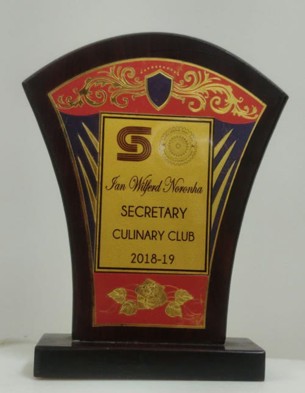
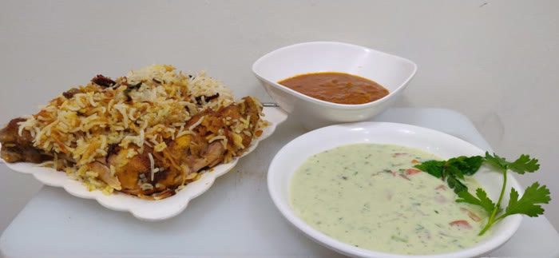
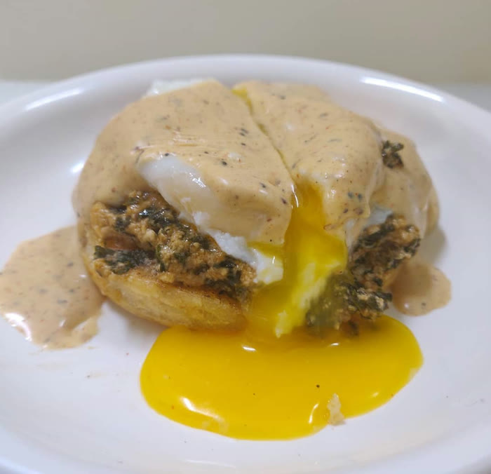
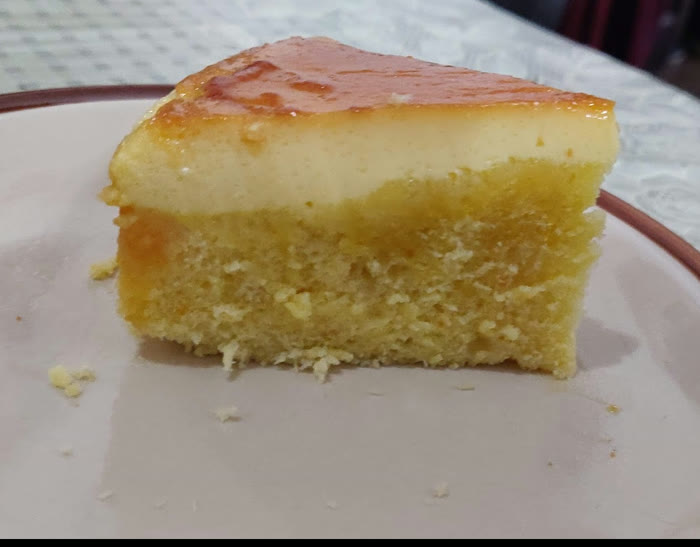
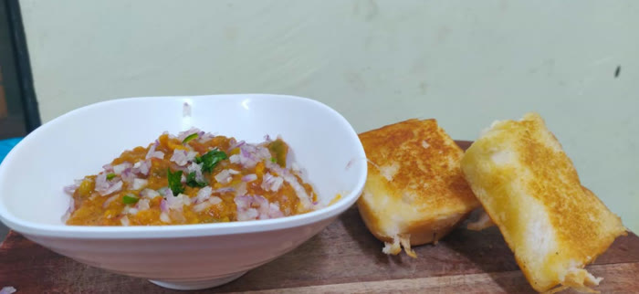
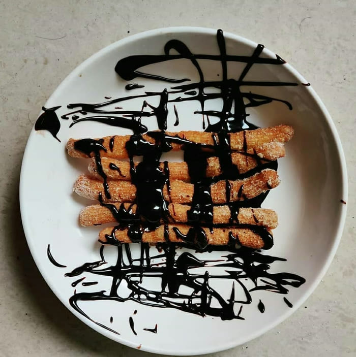
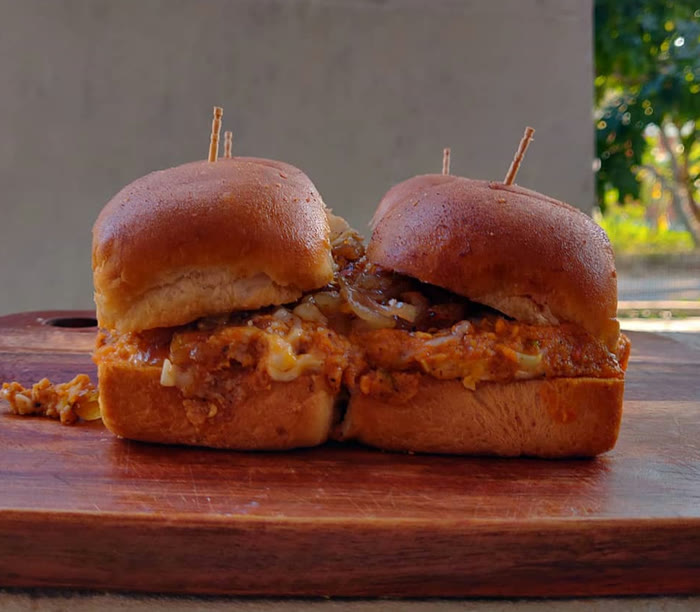

Hobbies
Outside the lab: cooking, anime, and gaming.
Co-founded the Culinary Club at IIT Roorkee, India's first student-run cafe, and served as its first secretary. Organized events with 100+ participants and introduced the first cooking competition at the pan-IIT cultural meet, a model since followed by culinary clubs across the IITs. iitr.ac.in/culinaryclub →






